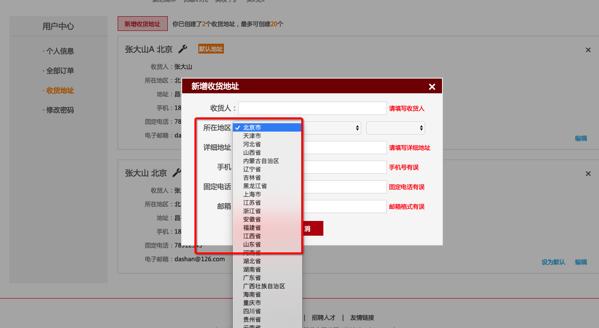
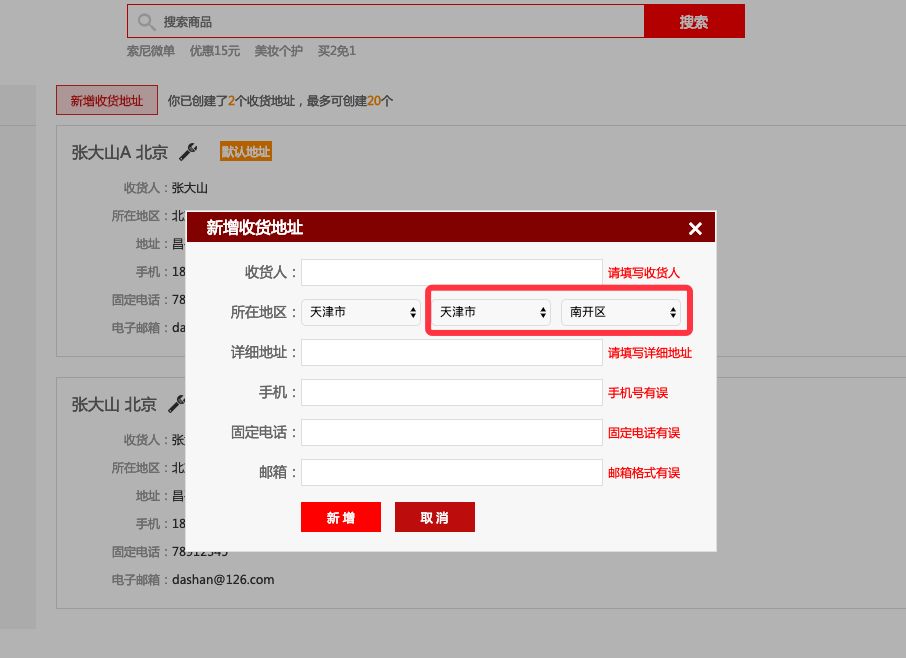

省市区三级联动
学习目标：
- 省市区三级联动
- 在 Django REST framework 中使用缓存
作用:
- 构建地址部分的内容

在用户录入地址时，需要进行省市区的选择
在页面加载时，向后端请求省份数据，当用户选择确定省份后，向后端请求该省份的城市数据；在用户选择确定城市数据后，向后端请求该城市的区县信息。
我们把这个过程称为省市区三级联动
创建子应用 areas
我们新建一个子应用 areas 来实现省市区三级联动
python ../../manage.py startapp areas注册:
INSTALLED_APPS = [ ... 'areas', ]添加总路由:
# areas: path('', include('areas.urls')),
数据库分析:
我们将要创建的数据库表类似于这样:
我们创建的数据库是一种自连接的数据库
| id | name | parent_id |
|---|---|---|
| 20001 | 江苏省 | NULL |
| 20010 | 南京市 | 20001 |
| 20011 | 玄武区 | 20010 |
| 30001 | 上海市 | NULL |
| 30010 | 徐汇区 | 30001 |
| 30011 | 长宁市 | 30001 |
情况一:
# 我们先获取省份:
area = Area.objects.get(id='20001')
# 如果已经获取到了省份, 那么下面就需要获取市
# 有省查市, 由1查多: 一对象.多类名_set.all()
# 所以获取市时:
area.area_set.all()
情况二:
# 我们先获取市级:
area = Area.objects.get(id='20010')
# 由市查省, 由多查1: 多对象.外键关联属性
# 查询南京市的上级省信息
area.parent
# 查询南京市下面的地区:
area.area_set.all()
知道了表的结构, 我们就可以根据表结构来定义模型类:
模型类的创建
在 areas / models.py 中，我们创建省市区数据表，采用自关联方式。
class Area(models.Model):
"""
行政区划
"""
# 创建 name 字段, 用户保存名称
name = models.CharField(max_length=20,
verbose_name='名称')
# 自关联字段 parent
# 第一个参数是 self : parent关联自己.
# on_delete=models.SET_NULL: 如果省删掉了,省内其他的信息为 NULL
# related_name='subs': 设置之后
# 我们就这样调用获取市: area.area_set.all() ==> area.subs.all()
parent = models.ForeignKey('self',
on_delete=models.SET_NULL,
related_name='subs',
null=True,
blank=True,
verbose_name='上级行政区划')
class Meta:
db_table = 'tb_areas'
verbose_name = '行政区划'
verbose_name_plural = '行政区划'
def __str__(self):
return self.name
说明
- 自关联字段的外键指向自身，所以
ForeignKey('self')- 需要使用
related_name指明查询一个行政区划的所有下级行政区划时，使用哪种语法查询，如本模型类中指明通过Area模型类对象.subs查询所有下属行政区划，而不是使用Django默认的Area模型类对象.area_set语法。
进行数据迁移:
python manage.py makemigrations
python manage.py migrate
导入数据:
我们这里准备了一些城市的数据, 存放在了 areas.sql 文件中.
现在我们需要把这些数据导入到数据库中去
第一种导入方式: 命令行导入
复制 .sql 文件到 scripts 目录下面
cd scripts
调用命令: mysql -h127.0.0.1 -uroot -p123456 meiduo_mall < areas.sql
注释:
-h 指定数据库ip地址
-u 指定数据库用户名
-p 指定数据库密码
meiduo_mall 指定数据库名称
< 将右侧的文件写入到左侧的命令中
第二种导入方式: 脚本导入
- 在 scripts 目录中创建 import_areas_data_to_db.sh 文件
- 把命令行的代码写入到文件中去
mysql -h127.0.0.1 -uroot -p123456 meiduo_mall < areas.sql- 在命令行的上方添加上注释 ( 此步骤必须要写, 否则出错 )
#!/bin/bash添加这句注释的意义:
linux 中有很多种shell: 例如bash 、csh 、 tcsh、 sh
这一行表明，你使用哪款shell来解释以下你写的代码
增加后, 文件的内容为:
#!/bin/bash mysql -h127.0.0.1 -uroot -p123456 meiduo_mall < areas.sql- 增加文件权限: 增加执行权限
chmod +x import_areas_data_to_db.sh- 执行当前脚本文件:
注意: 补充说明./import_areas_data_to_db.sh如果是 windows 电脑, 把 areas.sql 导入数据库时, 可能会提示 name 字段最大长度为20不够用. 这时需要在 areas.sql 文件的最上面添加:
set names utf8;
这样设置后. 应该能够解决问题
后端接口设计
1）请求省份数据
获取所有省级地区的信息
请求方式： GET /areas/
请求参数： 无
返回数据： JSON
{
"code":"0",
"errmsg":"OK",
"province_list":[
{
"id":110000,
"name":"北京市"
},
{
"id":120000,
"name":"天津市"
},
{
"id":130000,
"name":"河北省"
},
......
]
}
| 返回值 | 类型 | 是否必传 | 说明 |
|---|---|---|---|
| id | int | 是 | 省份 id |
| name | str | 是 | 省份名称 |
| code | str | 是 | 状态码 |
| errmsg | str | 是 | 错误原因 |
在 areas 的 views.py 文件中:
from django.views import View
from areas.models import Area
from django import http
class ProvinceAreasView(View):
"""省级地区"""
def get(self, request):
"""提供省级地区数据
1.查询省级数据
2.序列化省级数据
3.响应省级数据
4.补充缓存逻辑
"""
try:
# 1.查询省级数据
province_model_list = Area.objects.filter(parent__isnull=True)
# 2.整理省级数据
province_list = []
for province_model in province_model_list:
province_list.append({'id': province_model.id,
'name': province_model.name})
except Exception as e:
# 如果报错, 则返回错误原因:
return JsonResponse({'code': 400,
'errmsg': '省份数据错误'})
# 3.返回整理好的省级数据
return JsonResponse({'code': 0,
'errmsg': 'OK',
'province_list': province_list})
路径:
# 获取省份信息:
re_path(r'^areas/$', views.ProvinceAreasView.as_view()),
效果如下:

我们可以在原有的基础上增加 缓存功能:
则上面的代码可以变为:
# 导入:
from django.core.cache import cache
class ProvinceAreasView(View):
def get(self, request):
# 增加: 判断是否有缓存
province_list = cache.get('province_list')
if not province_list:
try:
province_model_list = Area.objects.filter(parent__isnull=True)
province_list = []
for province_model in province_model_list:
province_list.append({'id': province_model.id,
'name': province_model.name})
# 增加: 缓存省级数据
cache.set('province_list', province_list, 3600)
except Exception as e:
return JsonResponse({'code': 400,
'errmsg': '省份数据错误'})
return JsonResponse({'code': 0,
'errmsg': 'OK',
'province_list': province_list})
2）请求市区数据
获取所有地区的信息
请求方式： GET
/areas/(?P<pk>[1-9]\d+)/
请求参数： 路径参数
| 参数名 | 类型 | 是否必传 | 说明 |
|---|---|---|---|
| pk | string | 是 | 省份 id |
返回数据： JSON
{
"code":"0",
"errmsg":"OK",
"sub_data":{
"id":130000,
"name":"河北省",
"subs":[
{
"id":130100,
"name":"石家庄市"
},
......
]
}
}
| 返回值 | 类型 | 是否必传 | 说明 |
|---|---|---|---|
| code | str | 是 | 状态码 |
| errmsg | str | 是 | 错误原因 |
| id | int | 是 | 省份 id |
| name | str | 是 | 省份名称 |
| subs | list | 是 | 市区信息 |
在 areas.views.py 中添加如下代码:
class SubAreasView(View):
"""子级地区：市和区县"""
def get(self, request, pk):
"""提供市或区地区数据
1.查询市或区数据
2.序列化市或区数据
3.响应市或区数据
4.补充缓存数据
"""
try:
# 1.查询市或区数据
sub_model_list = Area.objects.filter(parent=pk)
# 查询省份数据
parent_model = Area.objects.get(id=pk)
# 2.整理市或区数据
sub_list = []
for sub_model in sub_model_list:
sub_list.append({'id': sub_model.id,
'name': sub_model.name})
sub_data = {
'id': parent_model.id, # pk
'name': parent_model.name,
'subs': sub_list
}
except Exception as e:
return JsonResponse({'code': 400,
'errmsg': '城市或区县数据错误'})
# 3.响应市或区数据 ok: 0
return JsonResponse({'code': 0,
'errmsg': 'OK',
'sub_data': sub_data})
子路由:
# 子级地区
re_path(r'^areas/(?P<pk>[1-9]\d+)/$', views.SubAreasView.as_view()),

我们也可以增加上缓存:
class SubAreasView(View):
"""子级地区：市和区县"""
def get(self, request, pk):
"""提供市或区地区数据
1.查询市或区数据
2.序列化市或区数据
3.响应市或区数据
4.补充缓存数据
"""
# 判断是否有缓存
sub_data = cache.get('sub_area_' + pk)
if not sub_data:
# 1.查询市或区数据
try:
sub_model_list = Area.objects.filter(parent=pk)
# 查询市或区的父级
parent_model = Area.objects.get(id=pk)
# 2.序列化市或区数据
sub_list = []
for sub_model in sub_model_list:
sub_list.append({'id': sub_model.id,
'name': sub_model.name})
sub_data = {
'id':parent_model.id, # pk
'name':parent_model.name,
'subs': sub_list
}
# 缓存市或区数据
cache.set('sub_area_' + pk, sub_data, 3600)
except Exception as e:
return JsonResponse({'code': 400,
'errmsg': '城市或区县数据错误'})
# 3.响应市或区数据
return JsonResponse({'code': 0,
'errmsg': 'OK',
'sub_data': sub_data})
4. 缓存省市区数据
提示：
- 省市区数据是我们动态查询的结果。
- 但是省市区数据不是频繁变化的数据，所以没有必要每次都重新查询。
- 所以我们可以选择对省市区数据进行缓存处理。
1.缓存工具
from django.core.cache import cache- 存储缓存数据：
cache.set('key', 内容, 有效期) - 读取缓存数据：
cache.get('key') - 删除缓存数据：
cache.delete('key') - 注意：存储进去和读取出来的数据类型相同，所以读取出来后可以直接使用。
2.缓存逻辑

3.缓存逻辑实现
- 省份缓存数据
cache.set('province_list', province_list, 3600)- 市或区缓存数据
cache.set('sub_area_' + area_id, sub_data, 3600)